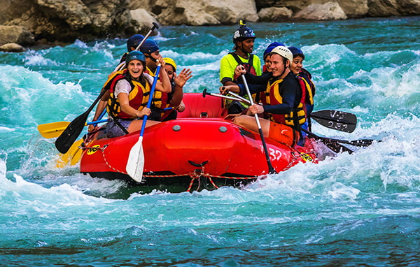

Sobre Nós A Aleks's Adventures Rafting nasceu da paixão pela natureza, pela aventura e pela vontade de proporcionar experiências inesquecíveis. Acreditamos que cada rio tem uma história para contar e que cada aventura é uma oportunidade de descobrir novos limites, superar desafios e criar boas lembranças. Nosso objetivo é aproximar as pessoas da natureza por meio de experiências de rafting, valorizando o trabalho em equipe, a diversão e o respeito ao meio ambiente. Mais do que passeios, queremos proporcionar momentos de conexão, emoção e amizade. Seja sua primeira experiência ou mais uma aventura em águas movimentadas, acreditamos que sempre existe algo novo para descobrir.